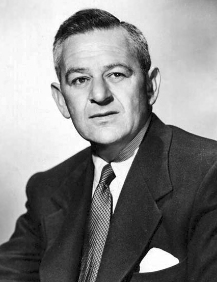

William Wyler
Oscar Nominations
Ceremony
Film
Category
Role
Result
38th Academy Awards
Oscars 1966
The Collector
Directing
Director
Nominated
32nd Academy Awards
Oscars 1960
Ben-Hur
Directing
Director
Won
29th Academy Awards
Oscars 1957
Friendly Persuasion
Best Motion Picture
Producer
Nominated
Directing
Director
Nominated
26th Academy Awards
Oscars 1954
Roman Holiday
Best Motion Picture
Producer
Nominated
Directing
Director
Nominated
24th Academy Awards
Oscars 1952
Detective Story
Directing
Director
Nominated
22nd Academy Awards
Oscars 1950
The Heiress
Directing
Director
Nominated
19th Academy Awards
Oscars 1947
The Best Years of Our Lives
Directing
Director
Won
15th Academy Awards
Oscars 1943
Mrs. Miniver
Directing
Director
Won
14th Academy Awards
Oscars 1942
The Little Foxes
Directing
Director
Nominated
13th Academy Awards
Oscars 1941
The Letter
Directing
Director
Nominated
12th Academy Awards
Oscars 1940
Wuthering Heights
Directing
Director
Nominated
9th Academy Awards
Oscars 1937
Dodsworth
Directing
Director
Nominated
Letterboxd
IMDb
Wikipedia
Home